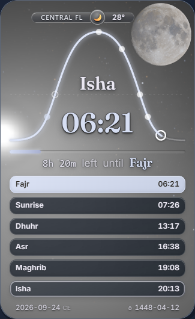
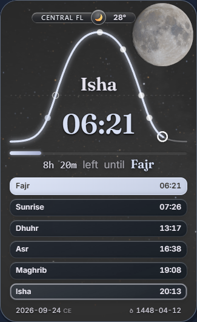
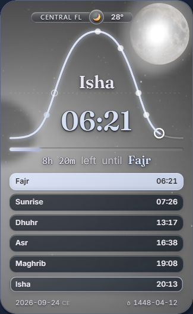
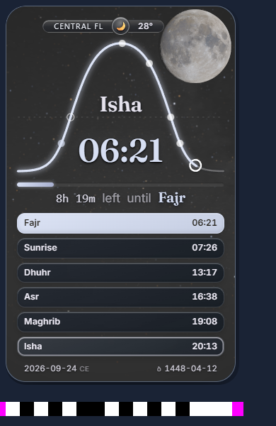
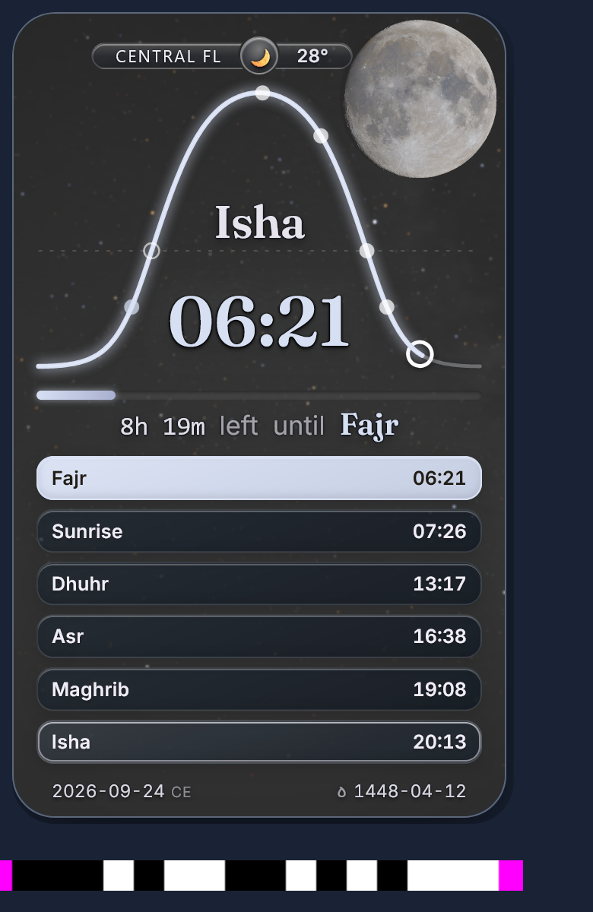
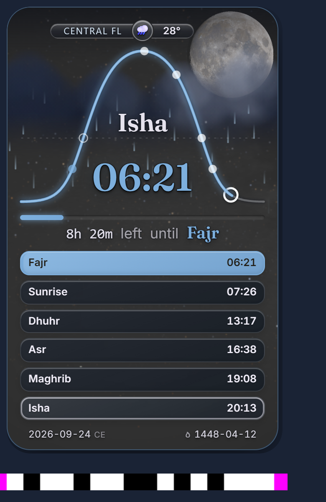

Original unstripped cards from one current accepted native frame. Production main fc8d13338f9274a768580cda5a805492f80c510d. These are proposals; issue34 stays OPEN.

240.6 / 100.0 / 87.8

58.6 / 51.9 / 50.0

114.4 / 100.0 / 87.8
Numbers are left / open / lower meanRGBcode. Fixed proposed maxima: 85 /80 /80, only for this clear Orlando scene at the original pageCSS regions and card origin(8,8); device coordinates scale byDPR. These are not general rain/day limits. Current-main lower value differs from the old causal packet because the delivered readable prayer rows changed what that ROI covers. H1 is specificationHypothesisA / comparisonarmB; H2 is specificationHypothesisB / comparisonarmC.
z = E × (.2126 Lr + .7152 Lg + .0722 Lb) t(z) = z when z ≤ .003 t(z) = .003 + .020(z-.003)/(.020+z-.003) otherwise display lunar RGB = raw lunar RGB × t(z)/z for z>0; zero stays zero.
Only the lunar display share changes. Keep original input/component arrays, separately retained rawsky and lunar field, exposure, physical direction/order, catalogue/diffuse light, V5 Moon material and body footprint. Presentation outputs intentionally use the mapped fields. Use the existing smooth night blend: full at solar altitude≤−18°, none at≥−12°. The same owner serves first paint, preview and refined admission.
H2 leaves broadwash and puts a compact bright patch over lunar detail; it is rejected as captured. No demonstrated physical unit-conversion bug is claimed.

Original native video including early acquisition
Original capture and source binding

Original native video including early acquisition
Original capture and source binding

Original native video including early acquisition
Original capture and source binding
Each run preserves its original native recording and trace. Early Moon acquisition gaps remain visible; these captures do not repair R0021 timing or qualify the actual extension parent.
The owner decision selects the formula/bounds and the shown complete-scene appearance. Original warmed cost and remaining full native controls still need proof before a production PR can be accepted. No merge or closure is requested here.